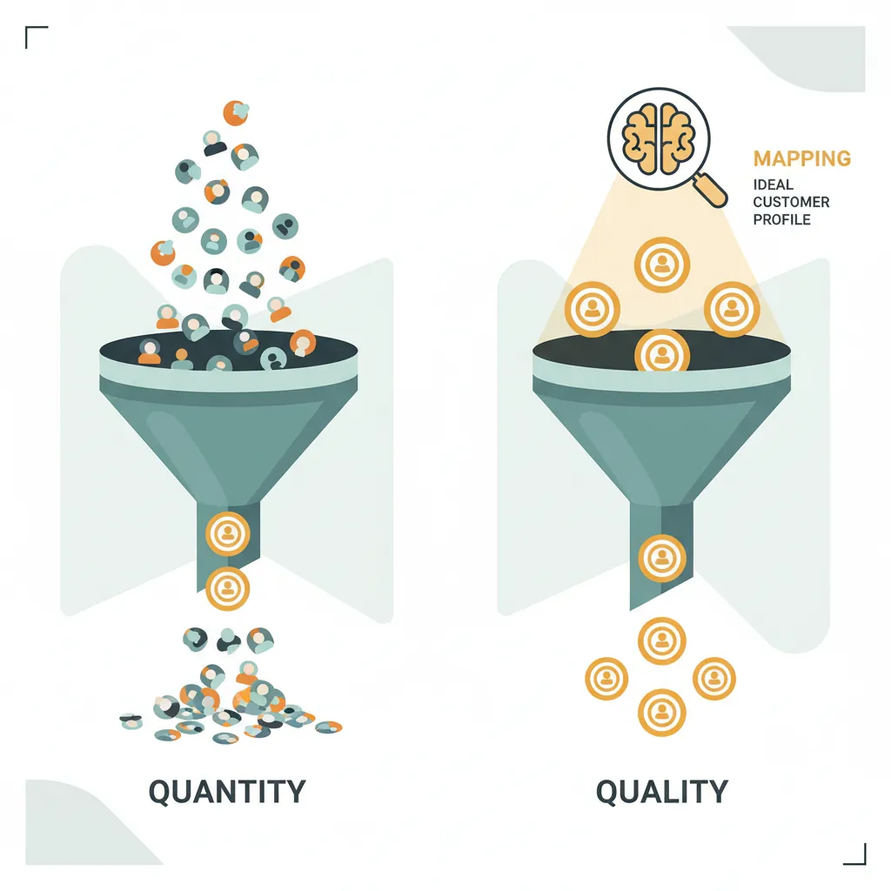
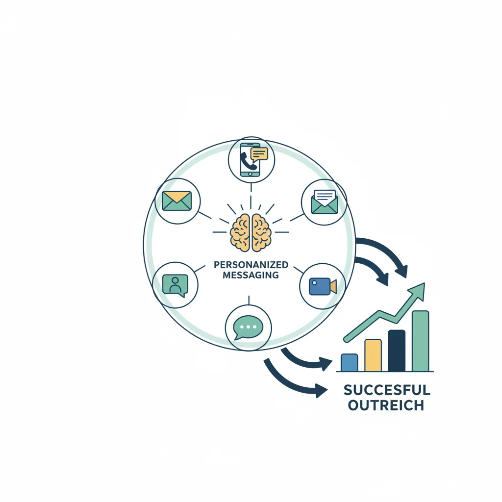
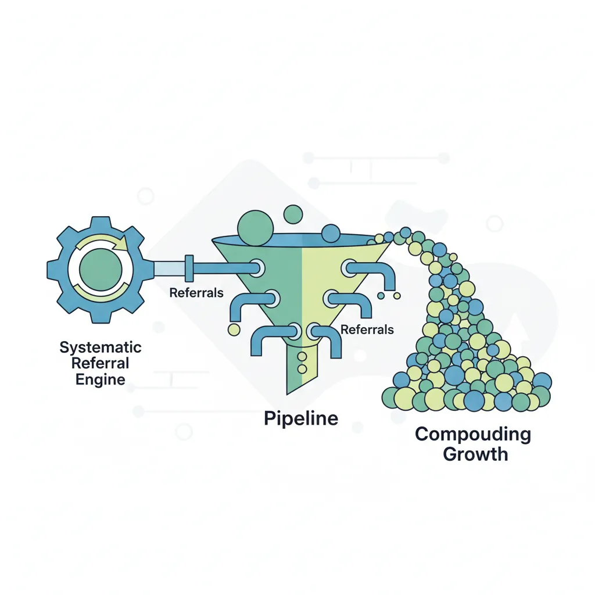
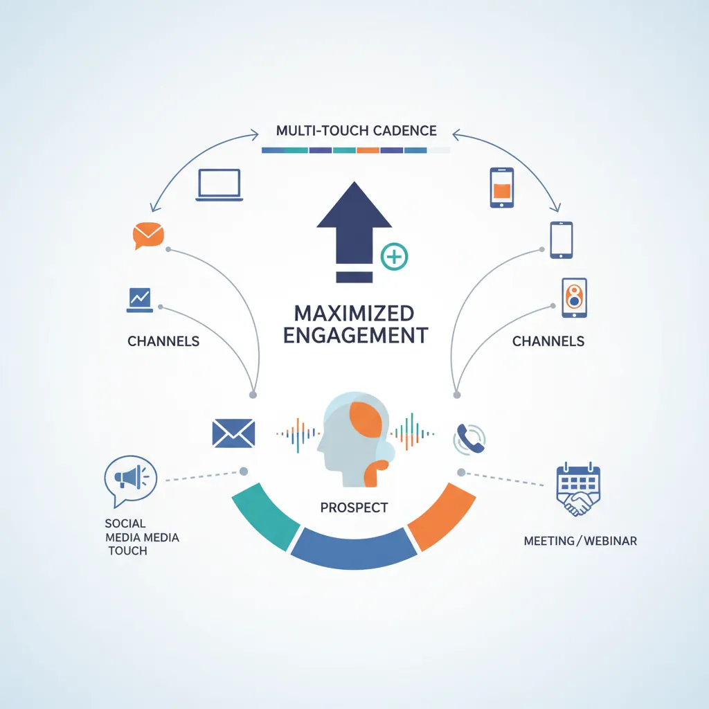
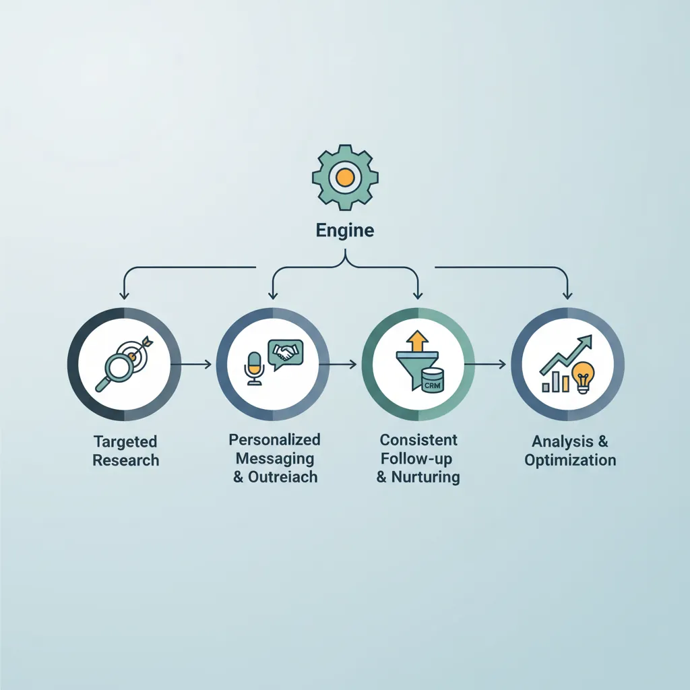

We use cookies to enhance your browsing experience, serve personalized content, and analyze our traffic.
By clicking "Accept All", you consent to our use of cookies. See our
Privacy Policy
for more information.
Part 2 of 18: Building on sales psychology from Part 1, this article teaches you how to identify, reach, and engage your ideal prospects systematically.
The quality of your pipeline determines the quality of your revenue. In Part 1, you learned how buyers think. Now you'll learn how to find and engage them systematically.
The Pipeline Paradox: Most salespeople spend 80% of their time chasing bad-fit prospects and 20% with qualified buyers. Top performers invert this ratio by being ruthlessly selective about who enters their pipeline. This article teaches you how to build a prospecting machine that fills your calendar with the right conversations.

Mapping your ideal customer profile ensures pipeline quality over quantity
The Rule of 100: If you prospect consistently to 100 well-researched, ICP-fit accounts, you'll generate more pipeline than chasing 1,000 random leads. Quality > quantity in every prospecting metric.
What is an Ideal Customer Profile (ICP)?
Your Ideal Customer Profile is a detailed description of the company (not person) that would gain the most value from your product or service. Unlike buyer personas (which describe individuals), ICPs describe organizational characteristics.
Think of ICP as a "sorting filter": Before a lead enters your pipeline, ask "Does this company match my ICP?" If no, don't pursue them—even if they raise their hand. Chasing non-ICP leads is the #1 cause of wasted sales time and lost quota.
The Three Dimensions of ICP
Dimension
Definition
Key Attributes
Example (B2B SaaS)
Firmographics
Company demographics—who they are
Industry, size, revenue, location, growth stage
Series B+ SaaS, 50-500 employees, $10-100M ARR, US-based
Not all ICP-fit companies are equal. Create a scoring system to prioritize your prospecting:
┌────────────────────────────────────────────────────────────────┐
│ ICP SCORING MATRIX │
├──────────────────────┬────────────────────────────────────────┤
│ TIER A (Score 80+) │ Perfect fit - Maximum priority │
│ • All firmographic │ • Aggressive multi-channel outreach │
│ criteria match │ • Executive-level personalization │
│ • Active buying │ • High SDR/AE time investment │
│ signals present │ │
├──────────────────────┼────────────────────────────────────────┤
│ TIER B (Score 50-79)│ Good fit - Standard priority │
│ • Most criteria │ • Standard cadence execution │
│ match │ • Template + personalization │
│ • Some buying │ • Balanced time investment │
│ signals │ │
├──────────────────────┼────────────────────────────────────────┤
│ TIER C (Score 25-49)│ Partial fit - Low priority │
│ • Few criteria │ • Automated/scaled outreach only │
│ match │ • Minimal personalization │
│ • No active signals │ • Quick disqualification required │
├──────────────────────┼────────────────────────────────────────┤
│ NO FIT (Below 25) │ Do not pursue regardless of interest │
│ • Missing must-have │ • Redirect to self-serve/partners │
│ criteria │ • May damage reputation to pursue │
└──────────────────────┴────────────────────────────────────────┘
Total Addressable Market Mapping
Once you've defined your ICP, quantify your market opportunity using the TAM/SAM/SOM framework. This isn't just for investors—it's essential for territory planning and resource allocation.
Market Layer
Definition
Calculation Method
Use Case
TAM Total Addressable Market
Everyone who could theoretically buy your product
(# of potential customers) × (average deal size)
Investor pitch, expansion planning
SAM Serviceable Addressable Market
Market you can actually serve today (geo, product fit)
TAM filtered by your current capabilities
Annual planning, hiring decisions
SOM Serviceable Obtainable Market
Market you can realistically capture (sales capacity)
SAM × realistic market share %
Quota setting, territory design
Example Calculation: If your ICP is "Series B+ SaaS companies with 50-500 employees in the US," and there are 5,000 such companies, with an average contract value of $50K, your TAM = $250M. If you only sell to companies using Salesforce (3,000 companies), your SAM = $150M. If you can realistically capture 5% market share, your SOM = $7.5M.
Building Your Target Account List (TAL)
Your Target Account List is the actionable output of TAM analysis. Use these data sources to build your list:
Data Sources
LinkedIn Sales Navigator: Filter by company size, industry, technology
ZoomInfo/Apollo: Contact data + firmographics + intent signals
BuiltWith/Wappalyzer: Technographic data (what tools they use)
The most effective sales organizations blend inbound and outbound strategies. Understanding when to use each—and how they complement each other—is crucial for pipeline optimization.
Dimension
Inbound Sales
Outbound Sales
Lead Origin
Prospects come to you (form fills, trials, demos)
You go to prospects (cold calls, emails, LinkedIn)
Intent Level
High intent—they raised their hand
Low/unknown intent—you're interrupting
Time to First Meeting
Fast (minutes to hours)
Slow (days to weeks of nurturing)
ICP Control
Low—you take what comes in
High—you choose who to pursue
Cost Per Lead
Lower CPL, higher marketing investment
Higher CPL, lower upfront cost
Scalability
Constrained by marketing budget and content
Constrained by SDR headcount and training
Best For
SMB, high volume, product-led growth
Enterprise, strategic accounts, new markets
The Hybrid Model: Blending Inbound and Outbound
The most successful sales teams don't choose between inbound and outbound—they integrate them. Here's how:
Pro Tip: Use inbound engagement to warm up outbound targets. If someone from a target account downloads your content but doesn't request a demo, that's a warm outbound lead. Reference their content engagement in your outreach: "I noticed you downloaded our guide on X—curious what challenge prompted that?"
ICP Builder Canvas Tool
Build your Ideal Customer Profile systematically. Complete the canvas below, then export to Word, Excel, or PDF for team alignment and prospecting reference.
ICP Builder Canvas
Define your ideal customer profile. Download as Word, Excel, or PDF.
Draft auto-saved
All data stays in your browser. Nothing is sent to or stored on any server.
Cold Outreach Mastery
Cold outreach is the most direct path to pipeline. While inbound marketing requires months to build momentum, cold outreach generates meetings today. The key is executing it with skill, not spam.

Effective cold outreach combines multiple channels with personalized messaging
The Golden Rule of Cold Outreach: "Be so good they can't ignore you." Your outreach should demonstrate genuine research, offer real value, and respect the prospect's time. The goal isn't to trick people into meetings—it's to identify those who genuinely need what you offer.
Cold Calling Mastery
Cold calling isn't dead—it's evolved. In an era of email saturation, the phone cuts through the noise. The key is modern technique: shorter calls, more value, faster qualification.
The Anatomy of a Successful Cold Call
┌─────────────────────────────────────────────────────────────────────────┐
│ COLD CALL STRUCTURE (90 seconds) │
├─────────────────────────────────────────────────────────────────────────┤
│ │
│ OPENER (10 sec) │
│ ├─ Pattern interrupt: Break the "salesperson" expectation │
│ ├─ Permission-based: "Do you have 27 seconds?" │
│ └─ Honest context: "This is a cold call, I'm not going to pretend" │
│ │
│ REASON FOR CALL (20 sec) │
│ ├─ Trigger/research: "I noticed your company just..." │
│ ├─ Problem statement: "Companies like yours often struggle with..." │
│ └─ Curiosity hook: "I'm curious if that's something you're seeing" │
│ │
│ QUALIFICATION (30 sec) │
│ ├─ Open question: Let them talk │
│ ├─ Listen actively: Take notes, don't interrupt │
│ └─ Validate: "That's exactly what we help with..." │
│ │
│ CALL TO ACTION (30 sec) │
│ ├─ Clear ask: "Would you be open to a 15-minute call?" │
│ ├─ Calendar booking: Get specific date/time now │
│ └─ Confirmation: Send invite while on the phone │
│ │
└─────────────────────────────────────────────────────────────────────────┘
Proven Cold Call Openers
Opener Style
Script Example
Psychology
Permission-Based
"Hi [Name], this is [You] from [Company]. Did I catch you at a bad time?"
Gives control, reduces defensiveness
Honest Interrupt
"Hi [Name], I know you weren't expecting my call, and I'll be brief. Do you have 27 seconds?"
Pattern interrupt with specific time
Research-Based
"Hi [Name], I saw your team just posted 5 SDR openings. Curious if the growth is going well?"
Demonstrates you did homework
Referral Mention
"Hi [Name], [Referrer name] suggested I reach out to you about..."
Leverages social proof and trust
Problem-First
"Hi [Name], I work with VPs of Sales who are struggling to hit quota with 50% of their team. Is that something you're seeing?"
Leads with pain, invites confirmation
Handling Gatekeepers
Executive assistants and gatekeepers aren't obstacles—they're potential allies. Treat them with respect:
Do This
"Could you help me understand who handles X decisions?"
"I know [Executive] is busy—when's usually a good time to reach them?"
"Would it be helpful if I sent some information first?"
Be friendly, use their name, remember them next time
Never Do This
"Just put me through, it's important"
Lying about the purpose of your call
Being dismissive or impatient
Calling repeatedly after being told no
Cold Call Objection Handling
Common Objections & Responses
Cold CallObjection Handling
"I'm not interested"
"That's fair—most people say that. Quick question: are you not interested because you're not seeing [problem], or because you've already solved it?"
"Send me an email"
"Happy to—but to make sure it's relevant, can I ask: what's your biggest challenge with [area] right now?"
"We already have a solution"
"Great—who are you using? [Let them answer] What's working well? What would you improve?"
"I don't have time"
"Totally understand—how about a 5-minute call Thursday at 2pm just to see if there's any fit?"
"How did you get my number?"
"From [source]. I did some research on companies in [space] and your name came up. Did I catch you at an okay time?"
Curiosity QuestionsRedirectionPersistence
Cold Email Frameworks
Cold email is a numbers game played with quality. Your email competes with 100+ others in your prospect's inbox. The goal: get opened, get read, get a reply.
Email Metrics That Matter
Metric
Benchmark
What It Measures
How to Improve
Open Rate
40-60%
Subject line effectiveness
Better subject lines, sender reputation
Reply Rate
5-15%
Message relevance
Personalization, clearer CTA
Positive Reply Rate
2-8%
ICP fit + timing
Better targeting, trigger events
Meeting Booked Rate
1-5%
Overall campaign effectiveness
All of the above + follow-up
The Anatomy of a High-Converting Cold Email
┌─────────────────────────────────────────────────────────────────────────┐
│ HIGH-CONVERTING COLD EMAIL STRUCTURE │
├─────────────────────────────────────────────────────────────────────────┤
│ │
│ SUBJECT LINE (7 words max, lowercase feels personal) │
│ ├─ Question format: "quick question about [their initiative]" │
│ ├─ Curiosity gap: "[Name], noticed something about [company]" │
│ └─ Reference: "following up on [trigger event]" │
│ │
│ OPENING LINE (Personalized, shows you did research) │
│ ├─ ✓ "Saw your recent post about [topic]—resonated with me" │
│ ├─ ✓ "Congrats on the [achievement/funding/hire]" │
│ └─ ✗ "My name is [Name] and I work at [Company]" ← NEVER │
│ │
│ PROBLEM/VALUE (2-3 sentences max) │
│ ├─ Problem: "Companies scaling from 50→200 employees often see..." │
│ ├─ Insight: "What we've found is that..." │
│ └─ Social proof: "We helped [similar company] achieve [result]" │
│ │
│ CTA (One clear, low-friction ask) │
│ ├─ ✓ "Worth a 15-minute chat to explore?" │
│ ├─ ✓ "Open to a quick call Thursday or Friday?" │
│ └─ ✗ "Let me know when works for a demo" ← Too much commitment │
│ │
│ SIGNATURE (Clean, no novels) │
│ └─ Name, Title, Company, Phone (no paragraphs, no quotes) │
│ │
└─────────────────────────────────────────────────────────────────────────┘
Proven Cold Email Frameworks
AIDA Framework
Classic FrameworkHigh Intent Prospects
Attention → Interest → Desire → Action
Subject: quick question about [Company] growth
[Name],
[Attention] Noticed [Company] just raised a Series B—congrats!
[Interest] Curious: as you scale the sales team from 5 to 15 reps, how are you thinking about onboarding speed?
[Desire] We helped [Similar Company] cut rep ramp time from 6 months to 8 weeks, which let them hit revenue targets a quarter early.
[Action] Worth a 15-minute call to see if we could help similarly?
Best, [Your name]
PAS Framework
Pain-FocusedProblem-Aware Prospects
Problem → Agitate → Solve
Subject: the thing slowing down [Company]'s sales team
[Name],
[Problem] Most VP Sales at $10-50M companies tell me their biggest headache is inconsistent pipeline coverage—feast or famine every quarter.
[Agitate] What usually happens: Q1 looks great, Q2 pipeline is bare because reps stopped prospecting while closing deals. Sound familiar?
[Solve] We've built a system that keeps pipeline 3x covered without adding SDR headcount. Took [Similar Company] from 50% quota attainment to 95%.
Open to a 15-minute call to explore?
Best, [Your name]
BAB Framework
Transformation-FocusedAspirational Prospects
Before → After → Bridge
Subject: how [Similar Company] hit 120% quota
[Name],
[Before] Before working with us, [Similar Company] had the same challenge most $20M ARR companies face: talented reps, inconsistent results. Only 40% were hitting quota.
[After] Six months later, 85% of reps are at or above quota, and they've added $4M in new pipeline.
[Bridge] The bridge? A structured sales methodology + enablement system we helped them implement.
Would 15 minutes to explore what this could look like for [Company] be worthwhile?
Best, [Your name]
Follow-Up Email Cadence
80% of deals require 5+ touches. Most salespeople give up after 2. Your follow-up strategy separates you from the competition.
Email #
Timing
Theme
Example Subject
1
Day 1
Initial outreach (personalized)
"quick question about [topic]"
2
Day 3
Add value (resource/insight)
"thought this might help"
3
Day 7
Social proof (case study)
"how [Company] solved this"
4
Day 14
Different angle/trigger event
"saw [news about company]"
5
Day 21
Breakup email (creates urgency)
"closing the loop"
The Breakup Email: This final email has the highest response rate because it triggers loss aversion. Example: "Hi [Name], I've reached out a few times without hearing back—totally understand you're busy. I'll assume the timing isn't right and close your file. If things change, here's my calendar: [link]. Best of luck with [their initiative]."
Cold Email Analyzer Tool
Paste your cold email draft below to get instant analysis against best practices. The tool will score your email and provide improvement suggestions.
Cold Email Analyzer
Analyze your cold email against proven best practices.
Email Analysis Results
The 3-3-3 Rule for Sales Emails
The 3-3-3 Rule is a simple framework that ensures every cold email is scannable, relevant, and action-oriented. Prospects spend an average of 11 seconds reading a cold email—the 3-3-3 rule forces you to earn those seconds.
3
Rule
What It Means
3 seconds
Your subject line must hook in 3 seconds
Use the prospect's name, company, or a specific pain point. No generic "Quick question" or "Checking in."
3 lines
The body should be readable in 3 short paragraphs
Paragraph 1: Why you're reaching out (trigger event or pain). Paragraph 2: How you can help (social proof or result). Paragraph 3: Clear CTA (one question, one ask).
3 takeaways
The reader should retain 3 things maximum
Who you are, why it matters to them, and what to do next. Anything beyond 3 concepts dilutes your message.
Noticed [Company] recently expanded your customer success team — congrats! Companies scaling CS often struggle with onboarding speed as the team grows. (Why you're reaching out)
We helped [Similar Company] cut onboarding time by 30% in 6 weeks using automated playbooks. (Social proof)
Worth a 10-minute chat this week? (Clear CTA)
The 2-2-2 Rule for Follow-Ups
The 2-2-2 Rule provides a structured follow-up cadence after an initial meeting or proposal: follow up in 2 days, 2 weeks, and 2 months. Each touchpoint serves a different purpose and prevents deals from going cold.
Timing
Purpose
Example
2 Days
Immediate follow-up while the conversation is fresh
"Great chatting yesterday—here's the case study I mentioned. Are we still on for the technical review Thursday?"
2 Weeks
Check on progress, add new value, address stalls
"Just published a benchmarking report relevant to [their challenge]. Thought you'd find pages 3-5 useful. Any update on your evaluation timeline?"
2 Months
Re-engage stalled deals or nurture not-yet-ready prospects
"Circling back—we've since launched [new feature] that addresses the [specific concern] you raised. Worth a quick catch-up?"
Why 2-2-2 Works: The 2-day follow-up catches momentum. The 2-week follow-up catches buyers who needed internal discussion time. The 2-month follow-up catches timing shifts—budget cycles change, priorities evolve, and competitors disappoint. Most salespeople only do the first touchpoint and lose deals that simply needed more time.
LinkedIn Social Selling
LinkedIn is the modern salesperson's networking event. It's where B2B buyers research, learn, and engage before they ever talk to sales. Your presence here influences deals before the first call.
LinkedIn Profile Optimization
Your LinkedIn profile is your digital first impression. Optimize it for the buyer, not yourself:
Banner: Company branded or value proposition visual
Headline: "I help [persona] achieve [outcome]" (not just your title)
About: Tell a story—problem you solve, who you help, results achieved
Featured: Case studies, videos, testimonials
Content Strategy
Frequency: Post 3-5x/week for algorithm favor
Topics: Industry insights, lessons learned, customer wins
Format: Text posts → Carousels → Videos → Articles
Engagement: Comment thoughtfully on prospect posts daily
Goal: Be known for ONE thing in buyers' minds
LinkedIn Connection Strategy
┌─────────────────────────────────────────────────────────────────────────┐
│ LINKEDIN ENGAGEMENT FUNNEL │
├─────────────────────────────────────────────────────────────────────────┤
│ │
│ LEVEL 1: OBSERVE (Week 1-2) │
│ ├─ Follow target accounts and decision-makers │
│ ├─ Like their posts (not every one—be selective) │
│ └─ Comment thoughtfully on 3-5 posts │
│ │
│ LEVEL 2: ENGAGE (Week 2-3) │
│ ├─ Leave valuable comments (add insight, not just praise) │
│ ├─ Share their content with your perspective added │
│ └─ Reply to their comments on others' posts │
│ │
│ LEVEL 3: CONNECT (Week 3-4) │
│ ├─ Send personalized connection request referencing engagement │
│ ├─ "Hey [Name], been enjoying your posts on [topic]. Would love to │
│ │ connect and learn more about your approach." │
│ └─ Accept rate: 40-60% vs 10-15% for cold requests │
│ │
│ LEVEL 4: CONVERSE (Post-Connection) │
│ ├─ Send thank-you message (not a pitch!) │
│ ├─ Continue engaging with their content │
│ └─ After 2-3 exchanges, introduce relevant business topic │
│ │
│ LEVEL 5: CONVERT (When Timing is Right) │
│ └─ Transition to meeting: "Would love to pick your brain on [topic] │
│ over a quick call. Here's my calendar: [link]" │
│ │
└─────────────────────────────────────────────────────────────────────────┘
LinkedIn InMail Best Practices
High-Converting InMail Template
LinkedIn InMail45% Response Rate
Subject: [Their recent post topic/achievement]
Hi [Name],
Your recent post about [topic] really resonated—especially [specific point they made]. I've been thinking about that challenge a lot with our clients.
Quick question: as [Company] scales, how are you thinking about [relevant challenge]?
Asking because we've helped several [their peer companies] solve exactly that. Happy to share what's working if helpful.
Either way, keep the great content coming!
Best, [Your name]
PersonalizationValue-FirstSoft CTA
The 10-5-2 Rule: For every 10 connection requests you send, aim for 5 connections, 2 responses to your follow-up, and 1 meeting booked. This 10% meeting rate is achievable with proper warming through content engagement.
Referrals & Networking
Referrals are the highest-converting lead source in sales. A warm introduction from a trusted connection shortens sales cycles by 25-50% and increases close rates by 4x. Yet most salespeople leave referrals to chance instead of building systematic referral engines.

A systematic referral engine creates compounding pipeline growth
The Referral Math: If every closed deal generates 1 referral, and you close 25% of referrals, your pipeline compounds: 10 deals → 10 referrals → 2.5 deals → 2.5 referrals → etc. This creates "free" pipeline that requires zero prospecting effort.
B2P Audience Selling (Personal Brand)
B2P (Business-to-Person) selling is when your personal brand becomes your pipeline. Instead of chasing prospects one-by-one, you build an audience that comes to you. This is especially powerful for consultants, coaches, thought leaders, and senior salespeople.
"DM me 'PLAYBOOK' for our free guide" → starts conversations
Time Investment: B2P selling requires 5-10 hours/week of content creation and engagement. It takes 6-12 months to build meaningful momentum. This is a long-term play—not a quick fix—but compounds forever once built.
Referral Systems
The difference between occasional referrals and consistent referrals is system vs. hope. Top performers have explicit processes for generating referrals from every satisfied customer.
When to Ask for Referrals
At Deal Close
Right after they sign—they're most excited about the decision they just made.
After First Win
When they see initial value/results—peak moment of satisfaction.
At Renewal
They just recommitted—clearly they're satisfied with the relationship.
Referral Ask Scripts
The "Who Else" Referral Request
ConversationalNon-Pushy
After delivering value:
"[Name], I'm so glad we've been able to help you with [specific result]. Quick question—who else in your network is probably dealing with similar challenges? I'd love to help them the same way we've helped you."
If they hesitate:
"No pressure at all. When you do think of someone, just shoot me a LinkedIn connection or email intro. Happy to take it from there."
The "Specific Ask" Referral Request
TargetedHigher Conversion
When you have a specific target:
"[Name], I noticed you're connected to [Specific person/company] on LinkedIn. We've been trying to reach them—any chance you could make an introduction? Even a forward of this email would be hugely helpful."
Making it easy:
"I can draft a 2-sentence intro for you to send if that helps. Would that work?"
The Referral Incentive Matrix
Incentive Type
Best For
Implementation
Example
No Formal Incentive
High-value B2B relationships
Relationship and gratitude-based
Personalized thank-you gift
Service Credit
SaaS, subscription businesses
"Refer a friend, get 1 month free"
Dropbox, Evernote model
Cash/Commission
Partner/affiliate relationships
10-20% of first year revenue
Formal affiliate program
Mutual Value
Strategic partnerships
"I'll refer my clients to you too"
Accountant + Financial Advisor
Event & Networking Sales
Conferences, trade shows, and networking events are concentrated prospecting opportunities. In a few days, you can have more face-to-face conversations than months of cold outreach. The key is systematic preparation and follow-up.
Event Prospecting Framework
┌─────────────────────────────────────────────────────────────────────────┐
│ EVENT PROSPECTING: BEFORE → DURING → AFTER │
├─────────────────────────────────────────────────────────────────────────┤
│ │
│ BEFORE (2-4 weeks prior) │
│ ├─ Get attendee list (ask organizer or check app) │
│ ├─ Identify 20-30 priority targets from your ICP │
│ ├─ Send pre-event outreach: "Looking forward to connecting at [event]"│
│ ├─ Book meetings in advance: "Coffee Tuesday at 3pm?" │
│ └─ Prepare your 30-second pitch and qualifying questions │
│ │
│ DURING (at the event) │
│ ├─ Arrive early, stay late (best networking outside sessions) │
│ ├─ Work the room strategically: target list first, then open network │
│ ├─ Ask questions, listen more than talk │
│ ├─ Take quick notes on phone/card after each conversation │
│ ├─ Exchange LinkedIn connections in real-time │
│ └─ Set next steps before walking away: "I'll send you X on Monday" │
│ │
│ AFTER (24-72 hours post-event) │
│ ├─ Send personalized follow-ups referencing specific conversation │
│ ├─ Connect on LinkedIn with personal note (not generic) │
│ ├─ Deliver on any promises made ("Here's that resource I mentioned") │
│ ├─ Add to CRM with event tag for tracking │
│ └─ Book follow-up meeting while the connection is fresh │
│ │
└─────────────────────────────────────────────────────────────────────────┘
Networking Conversation Starters
Context
Conversation Starter
Why It Works
After a session
"What did you think of that talk? Anything actionable for you?"
Shared experience, invites opinion
At the booth
"What brought you to the conference this year?"
Open question, reveals priorities
At networking event
"I don't think we've met—what do you do?"
Direct, efficient, non-salesy
With a speaker
"Your point about X really resonated—can I ask a follow-up question?"
Flattering, opens deeper conversation
Standing alone
"Mind if I join you? These things can be overwhelming."
Relatable, breaks the ice naturally
The Business Card Rule: Collecting 50 business cards is worthless if you don't follow up. Collect fewer cards and have deeper conversations. Better to have 10 quality connections than 50 names with no context.
Outreach Systems
Multi-Touch Outreach Cadences
Single-touch outreach is dead. Research shows it takes 8-12 touches across multiple channels to generate a response from cold prospects. A cadence is a systematic, multi-touch, multi-channel sequence designed to maximize reply rates while respecting prospects' time.

Multi-touch cadences across channels maximize prospect engagement rates
The Numbers: Average reply rates by touch number: Touch 1: 30% of total replies | Touch 2-3: 25% | Touch 4-6: 25% | Touch 7+: 20%. Most salespeople give up after 2-3 touches, missing nearly half of potential replies.
Anatomy of a High-Converting Cadence
┌─────────────────────────────────────────────────────────────────────────────┐
│ 14-DAY ENTERPRISE OUTBOUND CADENCE │
├─────────────────────────────────────────────────────────────────────────────┤
│ │
│ DAY 1: 📧 Email #1 - Cold intro with personalized hook │
│ └─ Focus on specific pain point or trigger event │
│ │
│ DAY 2: 🔗 LinkedIn - Connection request with short note │
│ └─ Reference email: "Sent note about [topic]" │
│ │
│ DAY 4: 📞 Call #1 - Voicemail if no answer │
│ └─ Mention email, offer specific value │
│ │
│ DAY 5: 📧 Email #2 - Follow-up with new value angle │
│ └─ Add case study, stat, or relevant insight │
│ │
│ DAY 7: 🔗 LinkedIn - Engage with their content (like/comment) │
│ └─ Build visibility before next touch │
│ │
│ DAY 8: 📞 Call #2 - Try different time of day │
│ └─ Different voicemail message than Call #1 │
│ │
│ DAY 10: 📧 Email #3 - Different stakeholder or breakup angle │
│ └─ "Should I reach out to someone else?" │
│ │
│ DAY 12: 🔗 LinkedIn - Direct message with value offer │
│ └─ Share relevant content or insight │
│ │
│ DAY 14: 📧 Email #4 - "Breakup email" creating urgency │
│ └─ "Closing the loop" - often gets highest response │
│ │
└─────────────────────────────────────────────────────────────────────────────┘
Cadence Timing Best Practices
Channel
Best Days
Best Times
Avoid
Email
Tuesday, Wednesday, Thursday
8-10 AM, 2-4 PM (prospect's timezone)
Monday morning, Friday afternoon
Cold Calls
Wednesday, Thursday
8-9 AM (before meetings), 4-5 PM
Lunch hours, late Friday
LinkedIn
Tuesday-Thursday
7-8 AM, 12 PM, 5-6 PM
Weekends (lower engagement)
SMS
Any weekday (if opted in)
10 AM - 4 PM
Early morning, evenings, weekends
The "Breakup Email" That Gets Replies
High-Response TemplateFinal Touch
Subject: Closing the loop
Hi [Name],
I've reached out a few times about [brief value prop]. I haven't heard back, which tells me one of three things:
This isn't a priority right now (totally fine)
You're interested but slammed (happy to reconnect later)
I should be talking to someone else
Either way, I don't want to keep filling your inbox. If this isn't relevant, just let me know and I'll close the loop on my end.
Best, [Your name]
Breakup EmailHigh Response RateRespectful Exit
Cadence Variation by Deal Size
SMB Cadence
Deal size: <$5K ACV
Duration: 7-10 days
Touches: 5-7 total
Channels: Email + LinkedIn
Personalization: Template-based
Goal: Quick qualification
Mid-Market Cadence
Deal size: $5K-$50K ACV
Duration: 14-21 days
Touches: 8-12 total
Channels: Email + LinkedIn + Phone
Personalization: Industry-specific
Goal: Meeting booked
Enterprise Cadence
Deal size: $50K+ ACV
Duration: 30-45 days
Touches: 15-20+ total
Channels: All channels + direct mail
Personalization: Account-specific research
Goal: Multi-threaded entry
Channel & Partner Prospecting
Not all leads need to come from direct outreach. Channel partnerships can multiply your reach by leveraging others' existing relationships. This includes technology partners, consultants, system integrators, resellers, and complementary solution providers.
Step 2: Research their partner program or BD contact
Step 3: Lead with value: "Our customers often ask about [their category]"
Step 4: Propose pilot: "3 warm introductions each way to test fit"
Step 5: Track results and formalize if successful
Mutual ValueWarm IntroductionsPilot Program
Partner Qualification Framework
┌─────────────────────────────────────────────────────────────────────────────┐
│ PARTNER QUALIFICATION CRITERIA │
├─────────────────────────────────────────────────────────────────────────────┤
│ │
│ STRATEGIC FIT (Must-Have) │
│ ├─ Complementary (not competitive) solution │
│ ├─ Similar or overlapping ICP │
│ ├─ Aligned go-to-market approach │
│ └─ Mutual value proposition (not one-sided) │
│ │
│ CAPABILITY (Evaluate) │
│ ├─ Size of their customer base/reach │
│ ├─ Sales team capacity to refer/sell your product │
│ ├─ Technical ability to implement/support │
│ └─ Marketing resources for co-promotion │
│ │
│ COMMITMENT (Assess Intent) │
│ ├─ Executive sponsorship for the partnership │
│ ├─ Dedicated partner manager/resource │
│ ├─ Willingness to invest time in enablement │
│ └─ Track record with other partners │
│ │
│ RED FLAGS ⚠️ │
│ ├─ They compete in any segment of your market │
│ ├─ No clear champion or executive buy-in │
│ ├─ Expect referrals without reciprocating │
│ └─ Poor reputation with existing partners/vendors │
│ │
└─────────────────────────────────────────────────────────────────────────────┘
Sales Automation Tools
Modern prospecting requires automation to scale efficiently. The right tech stack automates repetitive tasks, provides intelligence on prospects, and ensures consistent follow-up. But beware: automation without strategy just scales bad practices faster.
Warning: The goal of automation is to give humans more time for human activities (research, personalization, conversations), not to replace them entirely. Purely automated outreach feels robotic and gets ignored.
The Modern Sales Tech Stack
Category
Purpose
Popular Tools
Key Features
CRM
Single source of truth for all prospects/deals
Salesforce, HubSpot, Pipedrive
Contact management, pipeline tracking, reporting
Sales Engagement
Multi-channel cadence execution
Outreach, Salesloft, Apollo
Email sequences, call tasks, LinkedIn steps
Data/Intelligence
Find contacts and company data
ZoomInfo, Apollo, Clearbit
Email/phone finding, firmographics, intent data
LinkedIn Tools
Social selling at scale
LinkedIn Sales Navigator, PhantomBuster
Advanced search, InMail, lead lists
Email Deliverability
Ensure emails reach inbox
Warmly, Mailchimp, SendGrid
Warmup, SPF/DKIM, bounce tracking
Conversation Intelligence
Analyze calls and demos
Gong, Chorus, Clari
Recording, transcription, insights
Automation Best Practices
Do Automate
Scheduling: Email send times, follow-up reminders
Data entry: Logging activities to CRM automatically
Initial research: Pulling company/contact data
Task creation: Next steps based on triggers
Reporting: Activity and pipeline dashboards
Template insertion: Starting point for messages
Don't Automate
First line personalization: Mention something specific
Discovery conversations: Active listening required
Objection handling: Requires real-time judgment
Relationship building: Genuine human connection
Strategic account planning: Nuanced thinking
Complex negotiations: Reading the room
Setting Up Your First Automated Cadence
Beginner FriendlyStep-by-Step
Choose your tool: Start with Apollo (free tier), Mailshake, or HubSpot sequences
Build your list: 50-100 ICP-qualified companies with verified emails
Create 4-5 email templates: Vary hook, value, and CTA across sequence
Set timing: 3-4 days between touches, send Tuesday-Thursday 8-10am
Add manual tasks: LinkedIn connection on Day 2, call task on Day 5
Personalize {first_name} and {company}: At minimum; ideally first line too
Set stop rules: Auto-remove on reply, bounce, or unsubscribe
Launch with 25%: Test first batch before scaling
Analyze after 100 contacts: Open rates, reply rates, meeting conversion
Sales EngagementSetup GuideBeginner
Metrics to Track in Your Outreach System
┌─────────────────────────────────────────────────────────────────────────────┐
│ OUTREACH METRICS DASHBOARD │
├─────────────────────────────────────────────────────────────────────────────┤
│ │
│ ACTIVITY METRICS (Leading Indicators) │
│ ├─ Emails sent per day/week → Target: 50-100/day per SDR │
│ ├─ Calls made per day → Target: 40-60/day per SDR │
│ ├─ LinkedIn connections sent → Target: 20-30/day per SDR │
│ └─ Total touches per prospect → Target: 8-12 before moving on │
│ │
│ EFFICIENCY METRICS (Conversion) │
│ ├─ Email open rate → Benchmark: 30-50% │
│ ├─ Email reply rate → Benchmark: 5-15% │
│ ├─ Call connect rate → Benchmark: 5-10% │
│ ├─ Call-to-meeting conversion → Benchmark: 15-25% │
│ └─ Positive reply rate → Benchmark: 3-8% │
│ │
│ OUTPUT METRICS (Results) │
│ ├─ Meetings booked per week → Quota: 8-15 per SDR │
│ ├─ Meeting show rate → Benchmark: 80-90% │
│ ├─ MQL to SQL conversion → Benchmark: 25-40% │
│ └─ Cost per meeting (CAM) → Calculate: (SDR cost + tools) / mtgs│
│ │
└─────────────────────────────────────────────────────────────────────────────┘
The "Magic Number" for SDRs: 100 touches per day (mix of emails, calls, LinkedIn) typically yields 1-2 meetings booked. If your SDRs are doing 100 touches and booking <1 meeting/day, focus on quality (targeting, messaging) over quantity.
Exercises
Exercise 1: Build Your ICP
30 minutesFoundation
Objective: Create a documented ICP for your product/service
List your 5 best customers (by revenue, retention, or NPS)
Find 3 common firmographic traits (size, industry, tech)
Identify the primary buyer persona (title, level, department)
Document 3 pain points they all share
Use the ICP Builder Canvas above to formalize
Exercise 2: Cold Call Practice
15 minutesRole Play
Objective: Practice the first 30 seconds of a cold call
Write your pattern interrupt opener (not "Hi, how are you?")
Craft a 10-second permission question
Prepare your 15-second value statement
Role-play with a colleague—time yourself!
Get feedback on tone, pace, and clarity
Exercise 3: Write 3 Cold Emails
45 minutesCopywriting
Objective: Create a 3-email sequence for one ICP persona
Email 1: Use AIDA framework—hook with pain point
Email 2: Lead with a stat or case study (social proof)
Email 3: Write a "breakup email" with soft close
Keep each under 100 words, one clear CTA
Use the Email Analyzer above to score each one
Key Takeaways
Summary:
Define your ICP first: Don't prospect without knowing who you're looking for—your best customers reveal the pattern.
Blend inbound and outbound: Inbound brings intent; outbound brings control. Use both.
Multi-touch is mandatory: 8-12 touches across channels; single emails don't work anymore.
Psychology beats tactics: Cold calls and emails work when they interrupt patterns and provide immediate value.
Automate the repetitive, humanize the personal: Use tools for scheduling and data; keep personalization and conversations human.
Referrals are the highest-converting channel: Build asking for referrals into your sales process systematically.

Core principles for building a high-converting prospecting engine
Continue the Series
Part 1: Sales Fundamentals & Psychology
Understanding buyer psychology before reaching out.